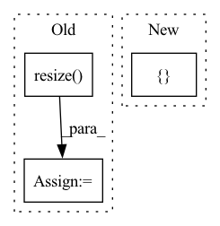

Pattern ID :24674
Before Change
img = img.resize((w,h),resample = Image.BILINEAR)
if mask is not None:
mask = mask.resize( (w,h), resample = Image.BILINEAR)
lm = np.stack([lm[:,0] - t[0] + w0/2,lm[:,1] - t[1] + h0/2],axis = 1)/s*102
img = img.crop((left,up,right,below))
if mask is not None:After Change
img = np.expand_dims(img,0)
lm = lm - np.reshape(np.array([(w/2 - 112),(h/2-112)]),[1,2])
return img, lm, cropped_img, [ left_c, right_c, up_c, below_c, render_size, t[0]-w0/2, h0/2-t[1]In pattern: SUPERPATTERN
Frequency: 3
Non-data size: 3
Instances Fragment ID: 76514143
Project Name: yeongjoonju/cfr-gan
Commit Name: 6840d7a2588a39fce22c2c80665f3796945ac43c
Time: 2022-02-27
Author: yj_ju@korea.ac.kr
File Name: mmRegressor/preprocess_img.py
M Class Name: AnonimousClass
N Class Name: AnonimousClass
M Method Name: process_img(5)
N Method Name: process_img(6)
M Parent Class:
N Parent Class:
M File Name: mmRegressor/preprocess_img.py
N File Name: mmRegressor/preprocess_img.py
M Start Line: 32
M End Line: 77
N Start Line: 47
N End Line: 67
Before Change
image = tf.convert_to_tensor(image)
if tf.reduce_max(image) < 2:
image *= 255
image = tf.image.resize( image, input_shape, method=resize_method, antialias=resize_antialias)
if len(image.shape) == 3:
image = tf.expand_dims(image, 0)
if self.rescale_mode == "raw":After Change
if input_shape is not None:
self.set_input_shape(input_shape)
images = [ image Fragment ID: 76514141
Project Name: leondgarse/keras_cv_attention_models
Commit Name: 2f70b0d51c8f2b1f8664f32dc75ecc1001758946
Time: 2023-01-29
Author: leondgarse@gmail.com
File Name: keras_cv_attention_models/common_layers.py
M Class Name: PreprocessInput
N Class Name: PreprocessInput
M Method Name: __call__(5)
N Method Name: __call__(5)
M Parent Class:
N Parent Class:
M File Name: keras_cv_attention_models/common_layers.py
N File Name: keras_cv_attention_models/common_layers.py
M Start Line: 586
M End Line: 601
N Start Line: 609
N End Line: 616
Before Change
// rgb_img = img_tensor.squeeze(0).permute(1, 2, 0).cpu().numpy() // [1,C,H,W]->[H,W,C]
bgr_img = cv2.imread(img_path, 1)
bgr_img = cv2.resize( bgr_img, (224, 224), interpolation=cv2.INTER_CUBIC)
bgr_img = np.float32(bgr_img) / 255 // 归一化
with GradCAM(model=model, target_layers=target_layers) as cam:
cam.batch_size = 32After Change
if pool_name in name: // 定位到全局池化层
break
modules_list.append(module)
target_layers = [ modules_list[-1] Fragment ID: 76514138
Project Name: bobo0810/classification
Commit Name: 1836c97e5c32c77787b9748173377cbabfa908dc
Time: 2022-03-30
Author: lipengbo@kanzhun.com
File Name: Utils/tools.py
M Class Name: AnonimousClass
N Class Name: AnonimousClass
M Method Name: vis_cam(4)
N Method Name: vis_cam(4)
M Parent Class:
N Parent Class:
M File Name: Utils/tools.py
N File Name: Utils/tools.py
M Start Line: 105
M End Line: 120
N Start Line: 130
N End Line: 161